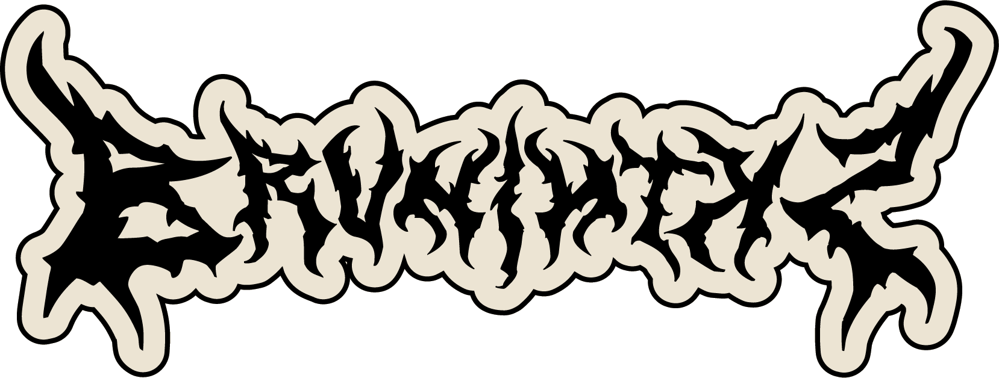
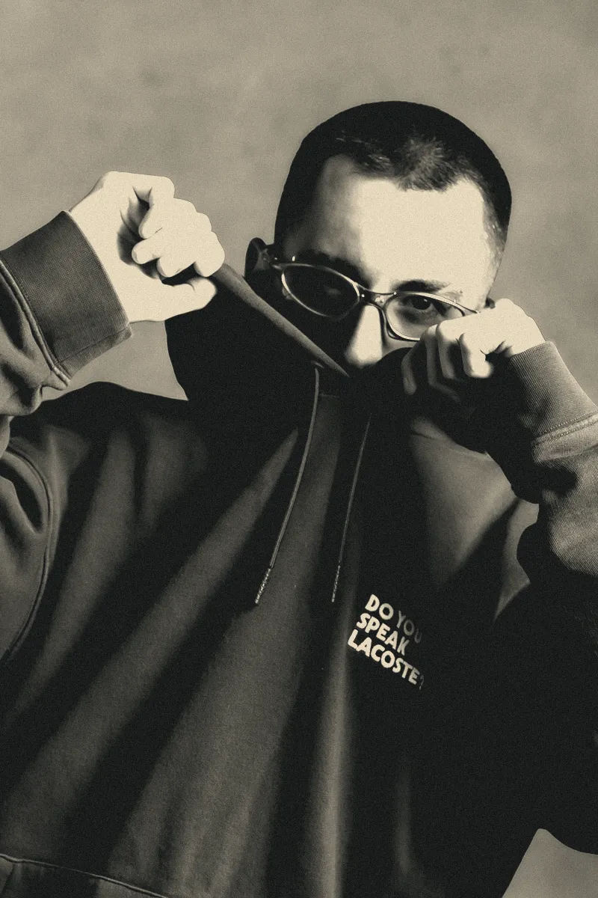
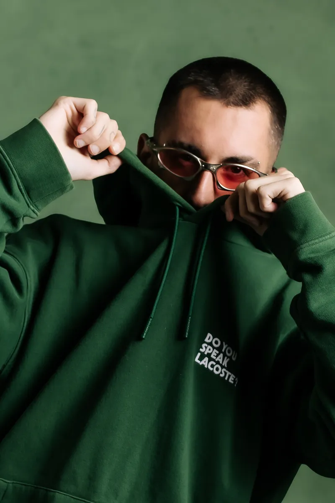
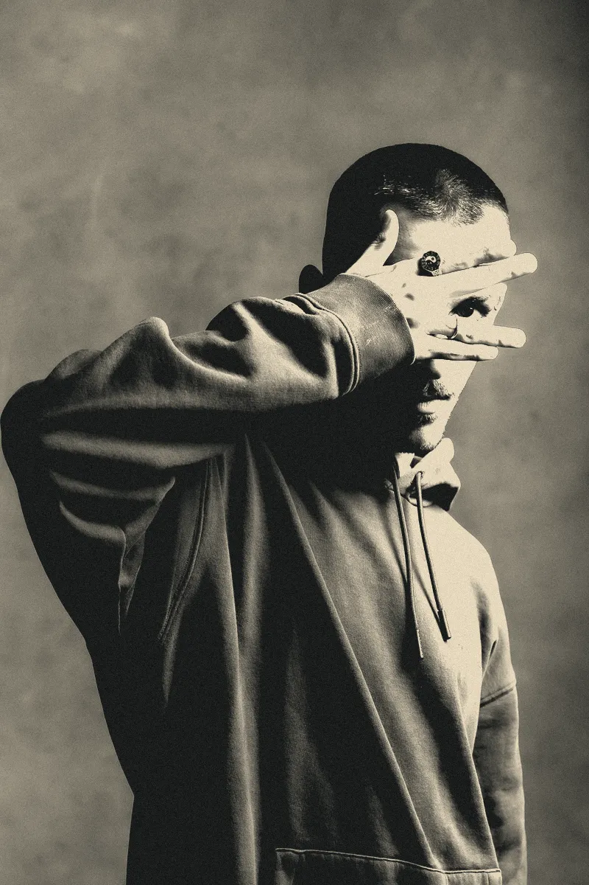
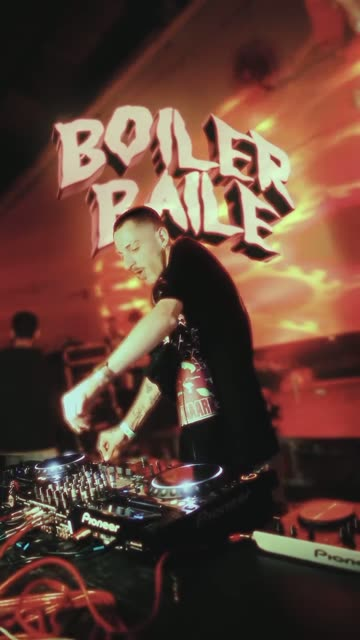
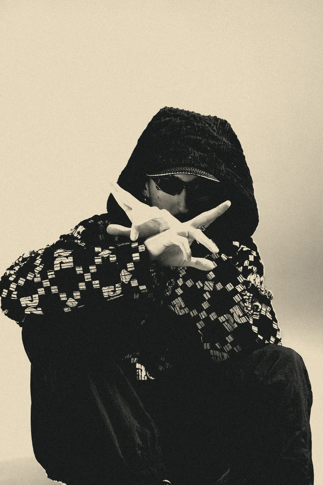
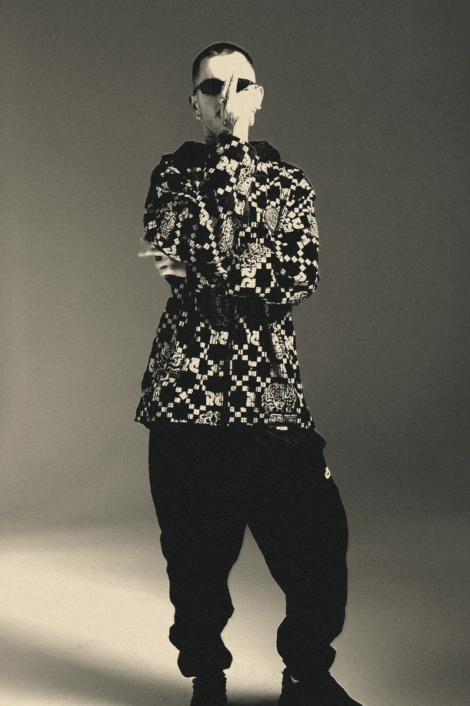
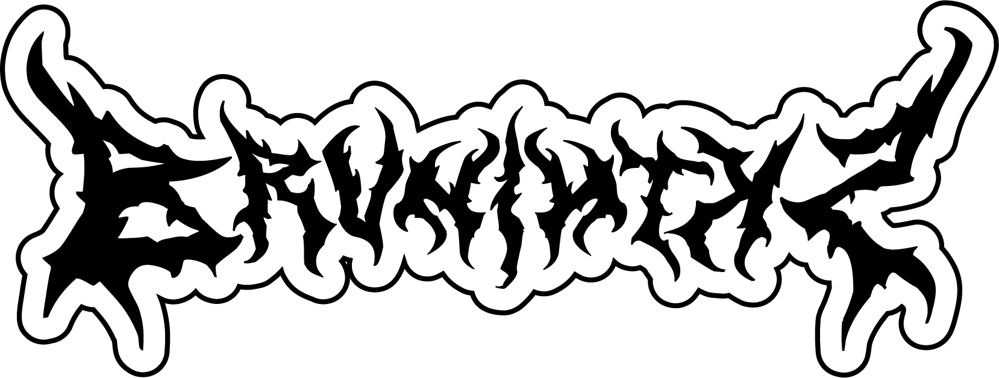

Brunin Tks — DJ e produtor de Porto Alegre (RS)
DJ & Produtor — Porto Alegre/RS

Brunin TksNº 001 — Carreira
Um DJ de funk que explora as vertentes mais agressivas e eufóricas.


Brunin Tks é DJ e produtor de Porto Alegre (RS), ativo desde 2017, transitando entre o funk, drum and bass e o rap. Sua trajetória começa dentro de clubs da capital, em festas onde o rap, o trap e o funk em sua essência moldaram sua identidade sonora. Hoje, se posiciona como um DJ de funk que explora vertentes mais agressivas e eufóricas, passeando entre a bruxaria, o funk BH e a crueza do funk original sem censura, entregando sets intensos, de pista e com personalidade.
É fundador da Savage e cofundador de movimentos importantes da cena underground como Boiler Baile, Sonora Breck e Sinistro DNB, contribuindo diretamente para a construção e fortalecimento da cultura na cidade. Ao longo da carreira, já integrou line-ups de grandes projetos como o festival Planeta Atlântida por três edições, além de passagens por eventos em diferentes estados como São Paulo, Santa Catarina e Paraná, consolidando seu nome no circuito do sul do país.
Como produtor, suas faixas com forte influência do funk paulista já ultrapassaram fronteiras, sendo tocadas em festas na França e na Espanha. Hoje, Brunin Tks faz parte de uma geração relevante de DJs de funk da capital, sendo reconhecido como referência dentro da cena e vivendo integralmente de sua arte há anos.
Números
- 288 mil+plays em sets online
- 2017início da carreira
- 3×Planeta Atlântida
- 2.000+pessoas numa Boiler Baile
- 4festas criadas
- FR · ESsuas faixas tocaram na França e na Espanha
Nº 002 — Produções
Suas produções e impactos na cena
Brunin Tks é responsável por alguns dos projetos mais relevantes da cena underground do sul do país, assinando a criação e direção de festas como Savage, Boiler Baile, Sonora Breck e Sinistro DNB. Seus eventos se destacam pela identidade forte, curadoria afiada e conexão direta com a cultura de rua, transitando entre o funk, o rap e a música eletrônica.
-
Seu projeto mais longevo, se consolidou como uma das primeiras festas da cidade a inserir sonoridades como bruxaria e drill em pista, mantendo até hoje sua essência crua e seu papel como espaço aberto para a juventude e o funk agressivo.

-
Se tornou um dos maiores movimentos underground de Porto Alegre, marcada pela fusão entre funk e eletrônico, chegando a reunir mais de duas mil pessoas em uma única edição e expandindo sua atuação para outros estados.

-
Vem ganhando destaque ao conectar diferentes vertentes das ruas e impulsionar artistas periféricos em palcos maiores.

-
Representa a nova geração do gênero na cidade, promovendo encontros entre diferentes épocas e sonoridades.

À frente desses projetos, Brunin atua na curadoria, direção criativa e operação, além de ser DJ residente em todos eles, construindo uma cena cultural forte, diversa e em constante expansão no sul do país.
Nº 003 — Sets
Sets que marcaram a trajetória
Dos bailes que viraram memória aos sets que rodaram o Brasil e a Europa, cada apresentação representa um avanço na sua caminhada. Seja em vídeo ou nas plataformas, é onde sua identidade se transformou em som e conexão real com o público.
Mais tocados
- “15 minutinhos pra derrubar noia no submundo”51 mil+ plays
- “13 minutinhos pra espancar ouvido de noite”47 mil+ plays
- “Set espanca pedinte de música”40 mil+ plays
Brunin Tks acumula mais de 288 mil plays em seus sets online, construindo uma presença sólida nas redes com mixes marcados por transições precisas, impacto e energia de pista. Seus trabalhos transitam entre o funk bruxaria, funk BH e o drum and bass, sempre com foco em intensidade e identidade sonora. Além das plataformas, já participou de projetos e rádios como Onze Bar, Senso Radio, Trinka, Lóbulo, Function, Guilda, Veneno e Relativa, em Madri. Seus lançamentos são pontuais e estratégicos, priorizando qualidade e impacto em cada entrega.
Nº 004 — Line-up
Shows que já compôs o line
Brunin Tks já dividiu line-ups com nomes de destaque do cenário nacional e com artistas e DJs relevantes do circuito underground, reforçando sua presença tanto em grandes palcos quanto nos principais movimentos da cena alternativa.
Palcos, festas e rádios
- Planeta Atlântida (3 edições)
- Onze Bar
- Senso Radio
- Trinka
- Lóbulo
- Function
- Guilda
- Veneno
- Relativa (Madri)
Brunin
Nº 005
Contrate
